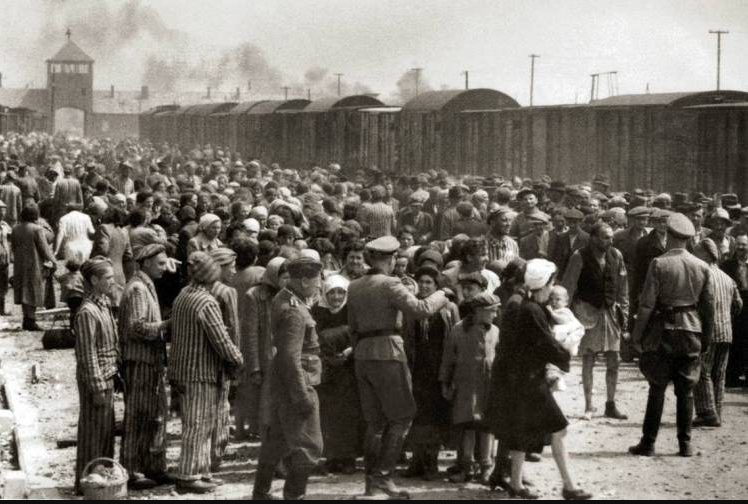

O Holocausto foi o processo sistemático de perseguição e assassinato de 6 milhões de judeus europeus pelo regime nazista alemão e seus aliados e colaboradores. O período oficial do Holocausto, conforme definido pelo Museu Estadunidense Memorial do Holocausto, abrangeu os anos de 1933 a 1945. O Partido Nazista, um movimento político antissemita, chegou ao poder na Alemanha em 1933 e usou o governo para discriminar e excluir os cidadãos judeus da sociedade alemã. Isso incluiu a promulgação de leis discriminatórias e a organização de violência contra os judeus alemães. Essas medidas visavam forçar os judeus a emigrarem. Conforme a década de 1930 avançava, o regime nazista expandiu suas políticas antissemitas para além das fronteiras alemãs, ao mesmo tempo em que buscava uma política externa agressiva e expansão territorial. Durante a Segunda Guerra Mundial (1939-1945), a Alemanha nazista conquistou outros países, estabeleceu alianças com governos colaboracionistas e criou Estados fantoches. Em 1942, controlava a maior parte do continente europeu e partes do norte da África. Em resumo, o Holocausto foi um período de perseguição e extermínio dos judeus europeus pelo regime nazista, que teve início em 1933 quando os nazistas chegaram ao poder na Alemanha e continuou até 1945, quando a Alemanha nazista foi derrotada pelas potências aliadas na Segunda Guerra Mundial. Durante esse período, o antissemitismo se espalhou pela Europa e a Alemanha nazista expandiu seu domínio territorial.
O Holocausto não foi um evento aleatório, mas sim o resultado de um longo histórico de perseguição aos judeus na Europa, impulsionado pelo antissemitismo. Na Alemanha, esse antissemitismo já existia desde o século XIX e se intensificou após a Primeira Guerra Mundial. A ideia de que os judeus eram responsáveis pela derrota alemã foi propagada, alimentando teorias conspiratórias. Inicialmente, os judeus foram alvos de retórica de ódio, mas quando os nazistas chegaram ao poder, essa retórica se transformou em ações concretas. Eles foram expulsos do serviço público, tiveram suas lojas boicotadas e sofreram ataques nas ruas. Restrições cada vez mais severas foram impostas, como a proibição de casamentos inter-religiosos e a retirada da cidadania dos judeus alemães. Com o início da guerra, os nazistas intensificaram o roubo de bens dos judeus e os confinaram em guetos em algumas partes da Europa. A ordem de extermínio veio do alto comando nazista, levando aos horrores do Holocausto. Dois eventos significativos que demonstraram o avanço do antissemitismo na Alemanha foram as Leis de Nuremberg, que instituíram discriminações legais contra os judeus, e a Noite dos Cristais, um pogrom violento contra a comunidade judaica. Em resumo, o Holocausto foi o resultado de um longo processo de perseguição e discriminação dos judeus na Europa, impulsionado pelo antissemitismo, que culminou na terrível tragédia do genocídio.